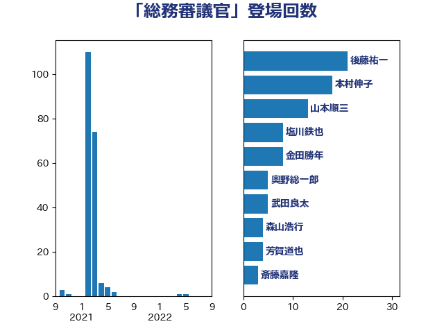

単語「総務審議官」

| 後藤祐一 | 立憲民主党 | 21 回 |
| 本村伸子 | 日本共産党 | 18 回 |
| 山本順三 | 自由民主党 | 13 回 |
| 塩川鉄也 | 日本共産党 | 8 回 |
| 金田勝年 | 自由民主党 | 8 回 |
| 奥野総一郎 | 立憲民主党 | 5 回 |
| 武田良太 | 自由民主党 | 5 回 |
| 森山浩行 | 立憲民主党 | 4 回 |
| 芳賀道也 | 国民民主党 | 4 回 |
| 斎藤嘉隆 | 立憲民主党 | 3 回 |
| 柚木道義 | 立憲民主党 | 3 回 |
| 田村智子 | 日本共産党 | 3 回 |
| 伊藤岳 | 日本共産党 | 2 回 |
| 加藤勝信 | 自由民主党 | 2 回 |
| 大串博志 | 立憲民主党 | 2 回 |
| 柳ヶ瀬裕文 | 日本維新の会 | 2 回 |
| 櫻井周 | 立憲民主党 | 2 回 |
| 野村哲郎 | 自由民主党 | 2 回 |
| 上田清司 | 国民民主党 | 1 回 |
| 小西洋之 | 立憲民主党 | 1 回 |
| 平木大作 | 公明党 | 1 回 |
| 打越さく良 | 立憲民主党 | 1 回 |
| 杉尾秀哉 | 立憲民主党 | 1 回 |
| 蓮舫 | 立憲民主党 | 1 回 |
| 阿部弘樹 | 日本維新の会 | 1 回 |
| 高橋千鶴子 | 日本共産党 | 1 回 |